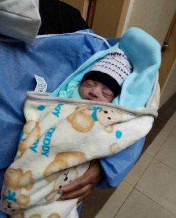
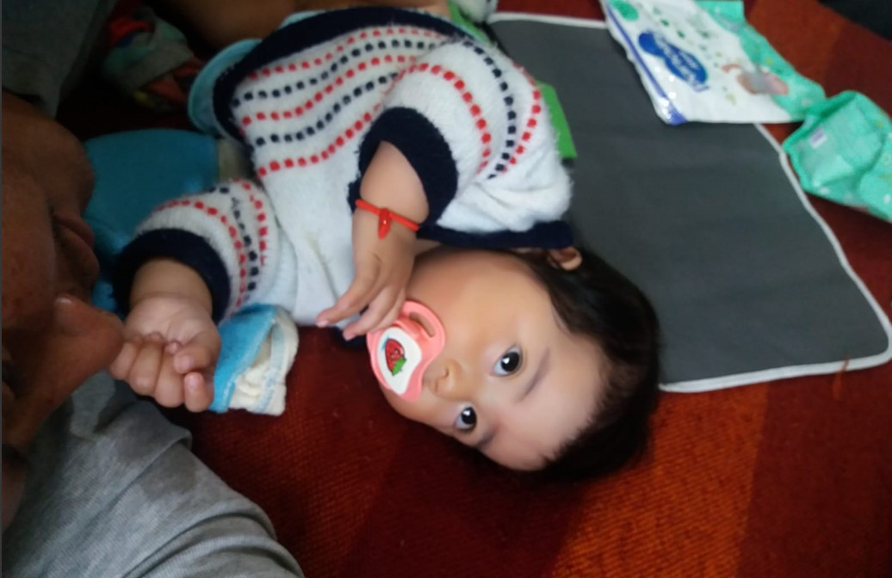
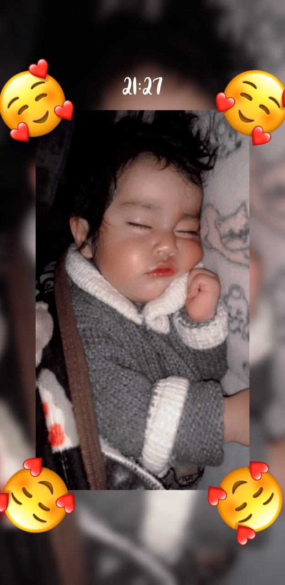
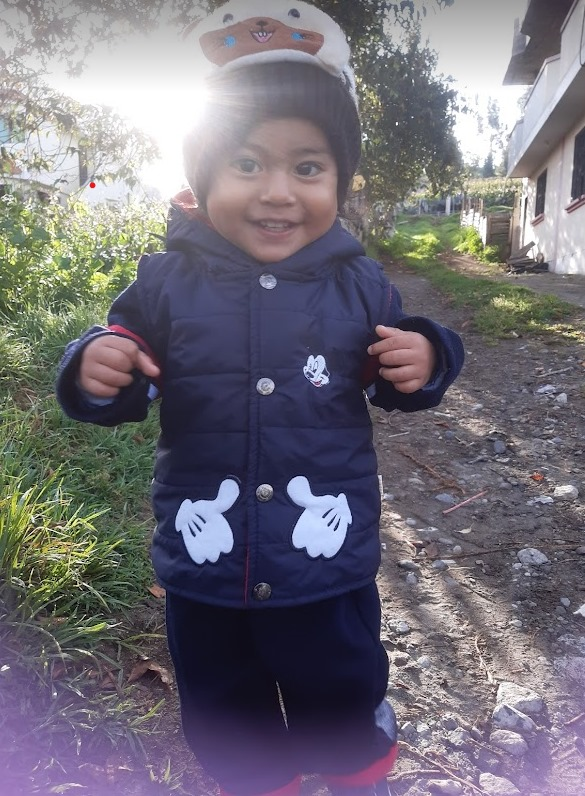
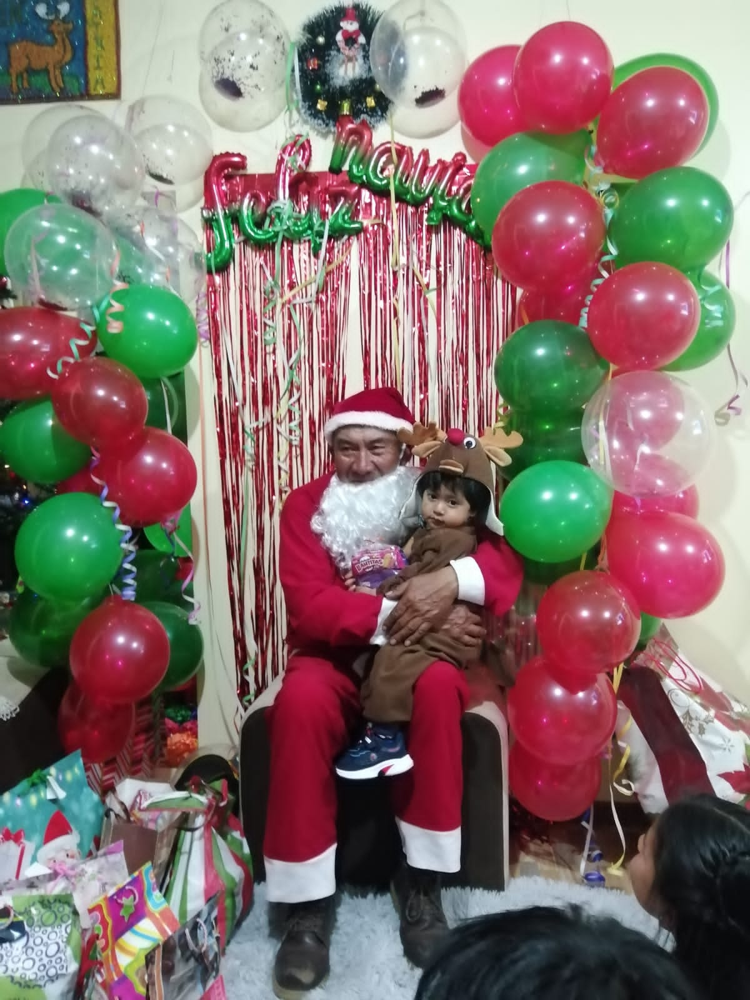

¡Bienvenida a mi rincón digital, donde comparto las alegrías, desafíos y momentos inolvidables de mi viaje como madre!
Soy Dome la mente y el corazón detrás de este espacio dedicado a explorar las experiencias únicas que la maternidad nos regala.
|  | El 30 de junio de 2021, a las 4:33 de la mañana, la vida se iluminó con la llegada de un precioso niño llamado Ian Jhosue. En la calma de la madrugada, su llanto resonó, llenando la habitación de alegría y amor. Este pequeño guerrero ha llegado para escribir su propia historia, marcando cada día con su dulzura. La magia de la vida capturada en una imagen: el 30 de junio de 2021 a las 4:33 de la mañana. La habitación hospitalaria se ilumina con una suave luz mientras Ian Jhosue, recién llegado a este mundo, descansa en las tiernas manos de su abuelita. |
|  | En la dulce imagen que se despliega, un pequeño tesoro llamado Ian Jhosue, con apenas 6 meses, reposa cómodamente en la cama junto a su abuelito. La atmósfera es tranquila y hogareña, con la luz suave que se filtra a través de las cortinas, creando una escena íntima y cálida. En los brazos del abuelito, Ian está envuelto en una serenidad juguetona. Sus pequeñas manos curiosas exploran el mundo que lo rodea, mientras sus ojitos chispean con la maravilla de la infancia. Un chupón, su inseparable compañero, se aferra con ternura, marcando un capítulo encantador de su crecimiento. |
|  | En esta entrañable imagen, descubrimos a Ian Jhosue, un pequeño de dos años, sumido en un profundo y apacible sueño. La habitación está envuelta en una atmósfera de calma, con una luz tenue que arroja sombras suaves sobre las paredes. La cama, un refugio seguro, está adornada con sábanas suaves y acogedoras, creando un entorno propicio para el descans |
|  | En la imagen, nuestro protagonista luce una indumentaria encantadora y cómoda, seleccionada con mimo por sus padres para marcar la ocasión especial. Sus grandes ojos reflejan una mezcla de asombro y timidez mientras se aventura en un entorno lleno de colores vibrantes y juguetes educativos que despiertan su curiosidad. |
|  | En esta encantadora imagen navideña, nos encontramos con Ian Jhosue, un niño de dos años, viviendo la magia de la temporada festiva junto a su abuelito. La escena está impregnada de alegría y espíritu navideño, con detalles que capturan la esencia de la celebración. El escenario se completa con adornos festivos, luces parpadeantes y quizás un árbol de Navidad resplandeciente en el fondo. La imagen transmite el amor y la conexión especial entre Ian Jhosue y su abuelito, creando recuerdos que perdurarán en el álbum de la familia como tesoros atesorados durante las Navidades. |